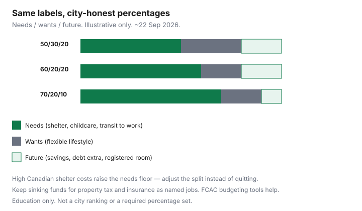

Personal Finance · Canada
Is the 50/30/20 Budget Realistic in Canada? A City Cost Adjustment Method
The 50/30/20 poster assumes needs fit in half of take-home pay. In many Canadian cities, rent or a mortgage payment alone blows past that line before transit, childcare, or groceries speak. Households then decide they are “bad at money” and quit. The fix is not more shame. It is a city-cost adjustment that keeps the useful labels — needs, wants, future — and rebuilds the percentages.
Education only. Figures are planning sketches for readers around 22 Sep 2026, not a prescription for your postal code.
Disclosure: Banking, HISA, and budgeting-app products are offer types. Saving Optimizer may later add partner links. We do not currently claim partnerships. This is education, not financial advice. Prefer a spreadsheet or FCAC-style worksheet over a paid app unless you already like one.
Key takeaways
- US-style 50/30/20 often breaks when Canadian shelter costs are high — adjust the split, do not abandon budgeting.
- Rebuild categories with housing, transit, childcare, and taxes visible.
- Use a city-cost method: lock needs from real bills, cap wants, assign the rest to savings and debt.
- 60/20/20 or 70/20/10 can be honest fits; the test is three months of adherence.
- Keep sinking funds outside “whatever is left,” especially property tax and insurance.
Why US-style 50/30/20 breaks in high-rent Canadian cities
50/30/20 (needs / wants / savings) spread through US media with different shelter norms. Canadian middle-aged households in Toronto, Vancouver, Victoria, and parts of other metros often see shelter at 35–50% of net pay before a child is in care. Forcing “needs = 50%” turns the budget into fiction. Fiction is how February wins.
The labels still help. Needs are must-pays to keep housing, work, and health. Wants are flexible lifestyle. Future is savings, debt principal beyond minimums, and registered contributions. Only the percentages need a Canadian rebuild.
Rebuild categories: housing, transit, childcare, taxes
Start from last month’s actuals, not a US template:
- Housing: rent or mortgage + condo fees + required tenant/home insurance.
- Utilities: hydro, heat, water, internet needed for work.
- Transit / work commute: pass, essential fuel, or parking required to earn.
- Childcare / support payments: if required to work or by order.
- Debt minimums: cards, lines, student loans — minimums are needs; extra principal is future.
- Groceries at a plain pattern: food is a need; restaurant patterns are wants.
Income tax already came off a pay stub for most employees. Do not “budget” gross. Self-employed households must still skim GST/HST and instalments as needs — that money is not lifestyle.
| Context sketch | Needs | Wants | Future |
|---|---|---|---|
| Lower shelter share / smaller city | 50% | 30% | 20% |
| High rent, no childcare | 60% | 20% | 20% |
| High rent + childcare | 70% | 20% | 10% |
| Temporary rebuild year | 65% | 15% | 20% (debt + buffer) |

A city-cost adjustment method without shame math
- List needs from real PADs and receipts for 30 days.
- Sum needs ÷ net pay = your needs floor.
- Set wants as a hard dollar cap you can name (not “whatever”).
- Assign every leftover dollar to future jobs: emergency HISA, debt extra, TFSA/FHSA/RRSP room.
- If future is under 10% and needs are honest, the lever is income, housing, or debt — not a prettier spreadsheet.
Shame math sounds like “other people do 50/30/20 so I should.” City-cost math sounds like “shelter is 42% here; my future skim starts at 12% and rises when childcare ends.”
When 60/20/20 or 70/20/10 fits better
Use 60/20/20 when needs land near 55–62% and you can still automate a meaningful skim. Use 70/20/10 when childcare plus rent are dominant and the 10% future line is mostly an emergency fund and employer RRSP match. Revisit when a lease renews, a child enters school, or a commute collapses. Pair with zero-based budgeting if you want every dollar named.
Keep sinking funds outside the percentages war
Annual property tax, auto/home insurance, and holidays are predictable lumps. Put monthly set-asides in the needs or future column on purpose — see Canadian sinking funds. Do not fund them from leftover wants in November.
A one-page Canadian budget split worksheet
- Net pay this month: ______
- Needs total (list): ______ → ______%
- Wants cap: ______ → ______%
- Future skim (HISA / debt extra / registered): ______ → ______%
- Sinking funds included in needs or future? Y/N — names: ______
- Three-month review date: ______
FCAC’s budgeting materials are a solid blank form; your city supplies the percentages.
Sources & date stamps
- FCAC — make a budget / budgeting tools (pages used ~22 Sep 2026).
- Community pattern: Personal Finance Canada discussions of 50/30/20 vs high rent (pain point only).
- Internal cross-links: zero-based budgeting and sinking-fund guides on Saving Optimizer.
Frequently asked questions
Is 50/30/20 useless in Toronto or Vancouver?
The rigid US split often fails when shelter alone is 35–45% of take-home. The method still helps as a starting label set — needs, wants, savings — if you rebuild the percentages for your city and taxes.
Should childcare sit in needs or wants?
If you need it to earn the income, treat it as a need. Shame math that calls childcare a ‘want’ is how Canadian budgets get abandoned.
What split should I use instead?
Many high-rent households land nearer 60/20/20 or 70/20/10 (needs / wants / savings+debt) after tax. The right split is the one you can run for three months without lying to the sheet.
Where do sinking funds go in 50/30/20?
Fund them inside needs or as a dedicated savings job — not as leftover wants. Property tax and insurance lumps are needs that happen to be annual.
Does FCAC recommend 50/30/20?
FCAC publishes budgeting tools and guidance; it does not require a 50/30/20 split. Use their worksheet ideas, then adjust for Canadian shelter costs.